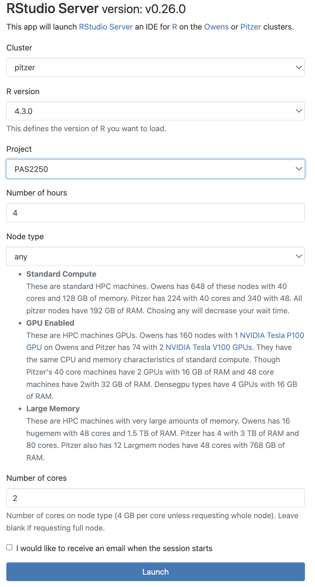
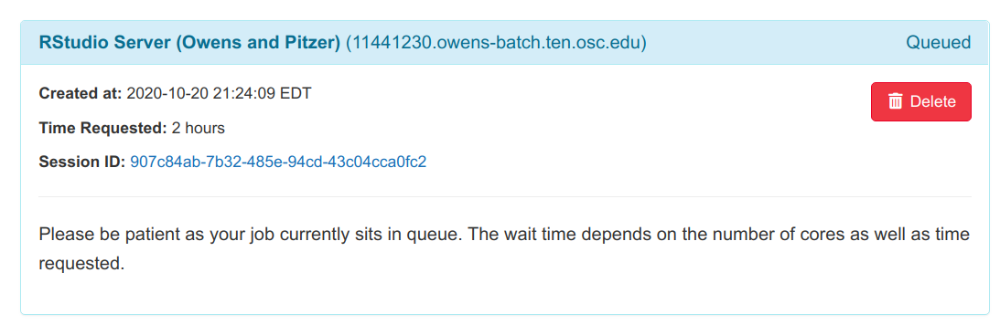
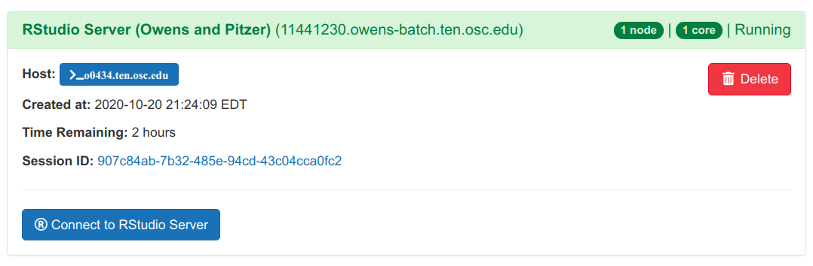

if(! "pacman" %in% installed.packages()) install.packages("pacman")
packages <- c("DESeq2", # Differential expression analysis
"tidyverse", # Misc. data manipulation and plotting
"ggrepel", # PCA with sample IDs
"pheatmap") # Heatmap plot
pacman::p_load(char = packages)
theme_set(theme_bw()) # Set ggplot themeWeek 4 lab: RNA-seq differential expression analysis
1 Introduction
For differential expression analysis, we will be using the popular DESeq2 R/Bioconductor package (paper, website).
2 Getting set up
2.1 Start an RStudio session at OSC
Click to see the instructions
- Log in to OSC at https://ondemand.osc.edu.
- Click on
Interactive Apps(top bar) >RStudio Server(all the way at the bottom) - Fill out the form, selecting (also shown in the figure below):
- Cluster:
Pitzer - R version:
4.3.0 - Project:
PAS2250 - Number of hours:
4 - Node type:
any - Number of cores:
2
- Cluster:
- Click the
Launchbutton

- Now, you should see a box like this:

- Your job should start running pretty soon, and when it’s ready the box should look like this:

- Click
Connect to RStudio Serverat the bottom of the box, and an RStudio Server instance will open. You’re ready to go!
2.2 RStudio settings & Project
RStudio settings
- Base R pipe
- Don’t save the environment
RStudio Project
Using an “RStudio Project” will most of all help with making sure your working directory in R is correct.
Click File > New Project > Existing Directory (in the popup) > Browse... to browse to your personal dir in /fs/scratch/PAS2250/ENT6703 > Create Project.
2.3 Load the necessary packages
2.4 Define our inputs and outputs
For the differential expression analysis, we have the following input files:
- Gene counts table – produced by running the nf-core rnaseq workflow on the input data we saw last week
- Metadata table – The metadata we saw last week, to enable between-treatment comparisons
count_table_file <- "results/counts/salmon.merged.gene_counts_length_scaled.tsv"
metadata_file <- "data/meta/metadata.txt"The output directory – and we create it if it doesn’t already exist:
outdir <- "results/DE"
dir.create(outdir, recursive = TRUE, showWarnings = FALSE)2.5 Load input data
Load the count table:
count_mat <- read_tsv(mat_file, show_col_types = FALSE)Load the metadata information:
meta <- read_tsv(meta_file, show_col_types = FALSE)3 Create a DESeq2 object from the input data
Prepare the count table:
count_mat <- count_mat |>
column_to_rownames("gene_id") |>
select(-gene_name) |>
round() |>
as.matrix()Prepare the metadata:
meta <- meta |>
arrange(sample_id) |>
column_to_rownames("sample_id")When creating the DESeq2 object, DESeq2 assumes that sample IDs in both tables match and are provided in the same order. Let’s make sure this is indeed the case:
all(row.names(meta) == colnames(count_mat))We will create the DESeq2 object using the function DESeqDataSetFromMatrix(), which we will provide with three pieces of information:
- The count data with argument
countData. - The metadata with argument
colData. - The model design for the DE analysis – argument
design.
For now, we will specify~1, which means “no design” – we will change this before the actual DE analysis.
dds <- DESeqDataSetFromMatrix(
countData = count_mat,
colData = meta,
design = ~ 1
)4 Explore the count data
What are number of rows and columns of the count matrix?
dim(counts)How many genes have non-zero counts?
dim(counts[rowSums(counts) > 0, ])How many genes have total counts of at least 10?
dim(counts[rowSums(counts) >= 10, ])4.1 Histogram of gene counts
Let’s plot a histogram of gene counts:
theme_set(theme_bw())
summed_gene_counts <- data.frame(gene_count = rowSums(counts)) %>%
rownames_to_column("gene_id")
ggplot(data = summed_gene_counts) +
geom_histogram(aes(x = gene_count), binwidth = 10000) +
scale_y_log10(expand = c(0, 0)) +
scale_x_continuous(expand = c(0,0))Zoom in a bit:
ggplot(data = summed_gene_counts) +
geom_histogram(aes(x = gene_count), binwidth = 1000) +
scale_y_log10(expand = c(0, 0)) +
scale_x_continuous(limits = c(0, 200000), expand = c(0,0)) +
theme(plot.margin = margin(0.5, 0.7, 0.5, 0.5, "cm"))How are counts distributed across samples? That is, we would like a sum of counts for each column. To get this, we use the apply() function, which can apply a function (in our case sum()) to all columns (hence MARGIN = 2 – for rows, use 1) of our counts dataframe:
apply(X = counts, MARGIN = 2, FUN = sum)5 Principal Component Analysis (PCA)
5.1 Run the PCA and prepare for plotting
First, we normalize the count data to have even sampling across samples (with respect to library size) and approximately even variance:
vsd <- varianceStabilizingTransformation(dds_raw, blind = TRUE)Next, we run the PCA and retrieve the data to plot with ggplot2:
pcaData <- plotPCA(vsd,
ntop = 500,
intgroup = c("AMF", "Treatment"),
returnData = TRUE)We extract the percentage of variance explained by different principal components, so we can later add this information to the plot:
percentVar <- round(100 * attr(pcaData, "percentVar"))
percentVar5.2 Plot the PCA results
ggplot(pcaData,
aes(x = PC1, y = PC2, color = AMF, shape = Treatment)) +
geom_point(size = 6) +
xlab(paste0("PC1: ", percentVar[1], "% of variance")) +
ylab(paste0("PC2: ", percentVar[2], "% of variance"))5.3 Plot again – with sample names
ggplot(pcaData,
aes(PC1, PC2, color = AMF, shape = Treatment)) +
geom_point(size = 3) +
geom_label_repel(aes(label = name)) +
xlab(paste0("PC1: ", percentVar[1], "% of variance")) +
ylab(paste0("PC2: ", percentVar[2], "% of variance"))6 DE analysis – full dataset
The design has two factors: AMF and Treatment. Rather than fit a multivariate model, we can start by merging the two into a single factor called group, and fit a univariate model with this factor.
dds_raw$group <- factor(paste(dds_raw$AMF, dds_raw$Treatment, sep = "_"))
table(dds_raw$group)We will set the “reference” level of the factor to be the double negative control (empty substrate, no Agrobacteria):
dds_raw$group <- relevel(dds_raw$group, ref = "control_mock")
dds_raw$groupNext, we set the analysis design:
design(dds_raw) <- formula(~ group)And finally, we perform the differential expression analysis with the DEseq() function:
dds <- DESeq(dds_raw)The DESeq() function above performs three steps consecutively:
estimateSizeFactors()– “Normalization” by library size and composition.Note that DESeq2 doesn’t actually normalize the counts in the sense that it produces a matrix with adjusted counts. Instead it uses raw counts and includes the size factors in the modeling.
To learn more about gene count normalization, see this video and this page.
estimateDispersions()– Estimate gene-wise dispersion (variance in counts).nbinomWaldTest(ddsObj)– Fit the negative binomial GLM and calculate Wald statistics, which is the test statistic underlying the p-value for whether a gene is differentially expressed.
These functions could also be called separately, which would be useful if you want to be able to change more defaults.
6.1 The results table
res <- results(dds)
head(res)By default, the results table prints statistics comparing the last level of the factor with the first level: that is, log-fold change and p-values describe differences between these two levels specifically. However, we can easily extract equivalent statistics for any pairwise comparison among our factor levels, which we will see later.
For now, we will explore what each column in this table means:
The
baseMeancolumn contains the mean expression level across all samples.The
log2FoldChangecolumn contains the log2-fold change of gene counts between the compared levels, that is, it represents the effect size.A log2-fold change of 1 indicates that the expression in the reference level is two-fold lower than that of the other level, a log2-fold change of 2 indicates a four-fold difference, a log2-fold change of 3 indicates an eight-fold difference, and so on.
Similarly, negative log2-fold values indicate a change in gene counts in the other direction: the reference level is higher than the other level.
The
lfcSEcolumn indicates the uncertainty in terms of the standard error (SE) of the log2-fold change estimate.The
statcolumn indicates the value for the Wald test’s test statistic.The
pvaluecolumn reported the uncorrected p-value from the Wald test.Because we are testing significance for many genes, we need to correct for multiple testing. DESeq2 uses the Benjamini-Hochberg False Discovery Rate (FDR) correction, and these values are reported in the column
padj(i.e., adjusted p-value).
A summary of this information about each column can be seen by running the mcols() function:
mcols(res)6.2 NA values in the results table
Some values in the results table can be set to NA for one of the following reasons:
If a gene contains a sample with a count outlier, both the p-value and adjusted p-value will be set to
NA. (DESeq2 performs outlier detection using Cook’s distance.)If all samples have zero counts for a given gene, the
baseMeancolumn will be zero, and the log2-fold change estimates, p-value and adjusted p-value will all be set toNA.DESeq2 also automatically filters genes with a low mean count in the sense that it does not include them in the multiple testing correction. Therefore, in such cases, the p-value will not be
NA, but the adjusted p-value will be.Because we have very low power to detect differential expression for such low-count genes, it is beneficial to remove them prior to the multiple testing correction: that way, the correction becomes less severe for the remaining genes.
Let’s see how many genes have NA p-values:
# Number of genes with NA p-value:
sum(is.na(res$pvalue))
# As a proportion of the total number of genes in the test:
sum(is.na(res$pvalue)) / nrow(res)And NA adjusted p-values:
# Number of genes with NA p-value:
sum(is.na(res$padj))
# As a proportion of the total number of genes in the test:
sum(is.na(res$padj)) / nrow(res)7 DE analysis – contrast two custom groups
Using the resultsNames function, we can see which pairwise contrasts between different levels of the factor are available (though it is not displayed in a particularly readable fashion):
resultsNames(dds)Not all pairwise contrasts between the 5 levels in our group factor are available here: instead, control_mock, which we set as the reference level, is being compared with the other 3 levels. (However, we can make other pairwise comparisons, too.)
Above, we looked at the results for the last of these comparisons (group_Ri_myb_vs_control_mock, i.e. “Ri_myb” vs. “control_mock”), simply because DESeq2 will show the last comparison by default when calling the results() function.
To see the results table for one of the other 3 comparisons, we pass a vector to the contrast argument of the results() function with the factor (group) and the two levels to be contrasted. For example, to see the results for “Ri_mock” vs. “control_mock”:
# Here, we could specify *any* pairwise contrast,
# not just the ones with "control_mock" that resultsNames() prints as seen above.
my_contrast <- c("Ri_mock", "control_mock")
res <- results(dds,
contrast = c("group", my_contrast))How many adjusted p-values were less than 0.1?
sum(res$padj < 0.1, na.rm = TRUE)8 Visually exploring the results
We will create a few plots, by way of example, of the results for the “Ri_mock” versus “control_mock” comparison, which we extracted above.
8.1 Volcano plot
For a nice overview of the results, we can plot a so-called “volcano plot”.
8.2 Plot specific genes
We can also create plot of expression levels for individual genes. That is especially interesting for genes with highly significant differential expression.
Let’s plot the top-5 most significantly differentially expressed genes:
# First, we select the 5 genes with the lowest adjusted p-value:
top5 <- row.names(res[order(res$padj)[1:5], ])# Then we create a function to make a plot for a single gene:
plotgene <- function(geneID, dds) {
d <- plotCounts(dds,
gene = geneID,
intgroup = "group",
returnData = TRUE)
p <- ggplot(d, aes(x = group, y = count)) +
geom_point(position = position_jitter(w = 0.1, h = 0)) +
labs(title = geneID) +
theme_bw()
print(p)
}Finally, we use sapply() to apply this function to each of our genes in the top5 vector.
none <- sapply(top5, plotgene, dds)If we wanted to, we could easily create plots for 100s of genes, this way.
8.3 Heatmap
We can create heatmaps with the pheatmap function. Let’s start by creating a function that will plot a heatmap given a vector of gene IDs and a DESeq2 object dds:
plot_heatmap <- function(geneIDs, dds) {
ntd <- assay(normTransform(dds))
ntd_sel <- ntd[match(geneIDs, rownames(ntd)), ]
df_meta <- as.data.frame(colData(dds)[, c("AMF", "Treatment")])
pheatmap(ntd_sel,
cluster_rows = FALSE,
cluster_cols = FALSE,
show_rownames = FALSE,
annotation_col = df_meta)
}Now, we can easily create a heatmap for the top-20 most highly differentially expressed genes:
top20_DE <- row.names(res[order(res$padj)[1:20], ])
plot_heatmap(top20_DE, dds)Or for the 20 most highly expressed genes:
top20_hi_idx <- order(rowMeans(counts(dds, normalized = TRUE)),
decreasing = TRUE)[1:20]
top20_hi <- row.names(dds)[top20_hi_idx]
plot_heatmap(top20_hi, dds)8.4 Export the results
Let’s save the results dataframe to file.
Note that it will only contain the results for one comparison. Also, if we write the results dataframe to file, we won’t be able to tell from the file what the comparison is, so let’s store that in two columns:
my_contrast
my_contrast_pasted <- paste0(my_contrast, collapse = "_vs_")
my_contrast_pastedres$level1 <- my_contrast[1]
res$level2 <- my_contrast[2]
kable(head(res))Now we can write res to file:
res_file <- file.path(outdir, paste0(my_contrast_pasted, '_all-res.txt'))
write.table(res, res_file,
sep = '\t', row.names = TRUE, quote = FALSE)9 DE analysis – with two factors
9.1 Controlling for one factor
Say we wanted to analyze the effect of “mock” versus “myb” (“Treatment” column) while controlling for the effects of “control” versus “Ri” (“AMF” column).
Let’s start by turning “Treatment” and “AMF” into factors, and saving a new DESeq2 object:
# Convert Treatment and AMF into factors:
dds_raw$Treatment <- relevel(factor(dds_raw$Treatment), ref = "mock")
dds_raw$AMF <- relevel(factor(dds_raw$AMF), ref = "control")
# Save a new object:
dds_2f_raw <- dds_rawTo include both factors, we use a + in the formula. Note that the order matters: using AMF + Treatment, we test for the effect of “Treatment” (the last factor), while controlling for the effect of AMF (the first factor).
design(dds_2f_raw) <- formula(~ AMF + Treatment)Run DESeq with the new design:
dds_2f <- DESeq(dds_2f_raw)
res <- results(dds_2f)How many adjusted p-values were less than 0.1?
sum(res$padj < 0.1, na.rm = TRUE)